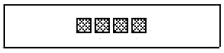
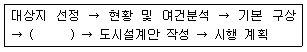
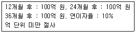
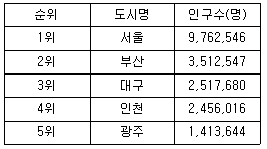
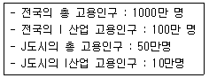
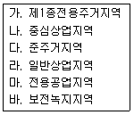
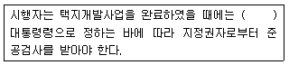

도시계획기사 (2016-10-01 기출문제)
1과목: 도시계획론
1. 다음 중 경관설계에 대한 설명으로 거리가 먼 것은?
- 그 지역에 살고 있는 주민의 특성을 파악하여 특정집단의 기호에 맞게 설계하여 지역주민의 만족도를 높인다.
- 좋은 풍경을 만드는 것으로, 풍경을 구성하는 여러 가지 공공시설이나 공공공간을 좋은 모습으로 제공하는 것이다.
- 사회의 기반을 담당하는 대규모의 시설이나 공간을 다루는 것은 지역의 생태계나 역사ㆍ문화가 배려되어야 한다.
- 사람들이 바라보아 싫증나지 않고, 사용하면서 애착이 생기며, 긴 시간이 흐름에 따라 맛이 깊어지는 것을 알려줌으로서 의미를 가진다.
(정답률: 82%)

2. 환경적으로 건전하고 지속가능한 개발을 위해 환경보전과 개발을 조화시키려고 하는 추세에 따라 도시의 환경문제를 해결하기 위해 도시개발이나 도시계획에서 새롭게 대두되는 개념의 도시를 무엇이라고 하는가?
- Compact City
- U-City
- Eco-City
- Smart City
(정답률: 88%)
3. 산업성장의 요인에 따른 변이할당분석에서 지역경제의 총변화(Total Share)가 50, 국가경제 성장효과(National Share)가 45, 도시경쟁력에 의한 효과(Local Factor)가 -10일 때 산업구조효과(Industry Miv)는 얼마인가?
- -5
- 5
- -15
- 15
(정답률: 71%)
4. 다음 중 계획(planning)의 특성으로 가장 거리가 먼 것은?
- 현재지향적
- 과정지향적
- 환류지향적
- 계획주체와 대상사이의 상호작용
(정답률: 73%)
5. 도시공공 시설과 관련이 없는 것은?
- 교육 및 문화시설
- 연구시설
- 도시가스시설
- 도시통신시설
(정답률: 86%)
6. 지속가능한 도시가 추구하여야 할 기본 목표가 아닌 것은?
- 환경부하가 높은 첨단도시
- 도시경관의 개선 및 보전
- 환경친화적 교통ㆍ물류체계의 정비
- 쾌적한 도시공간의 정비 및 확보
(정답률: 92%)
7. 도시정부의 예산편성제도 중 조직목표달성에 중점을 두고 장기적인 계획수립과 단기적인 예산편성을 유기적으로 관련시킴으로써 지원배분에 관한 의사결정을 합리적이고 일관성 있게 행하려는 제도는?
- 품목별 예산제도
- 성과주의 예산제도
- 복식 예산제도
- 계획 예산제도
(정답률: 81%)
8. 도시공원 및 녹지 등에 관한 법률에 따른 녹지의 유형과 가능에 대한 설명이 틀린 것은?
- 완충녹지 : 공해, 재해, 사고 등의 방지와 완화
- 경관녹지 : 도시의 자연적 환경을 보전하거나 이미 자연이 훼손된 지역을 복원ㆍ개선
- 연결녹지 : 도시 내 공원, 녹지 등을 유기적으로 연결
- 보전녹지 : 도시 주변 자연녹지의 훼손을 방지하고 자연 생태계의 보호를 통한 생물 다양성 확보
(정답률: 51%)
9. 유클리드 지역제(Euclidean Zoning)에 대한 설명으로 틀린 것은?
- 토지의 용도를 사전에 확정적으로 지정하였다.
- 토지이용의 규제는 각각의 필지 단위를 중심으로 하였다.
- 개발의 억제보다 개발의 유도 및 촉진에 관심을 두었다.
- 주택지에 공장ㆍ아파트 등을 배제하는 용도의 순화를 도모하였다.
(정답률: 75%)
10. 그리스의 건축가이며 도시계획가인 히포다무스는 도시계획에 관한 3조이론을 제안하였다. 여기서 3개조로 이루어진 건물집단 및 지구와 도로배치를 구분하기 위해 구성된 시민계급의 분류에 해당되지 않는 것은?
- 사제집단
- 농부집단
- 무장한 군인집단
- 예술가 집단
(정답률: 74%)
11. 계획이론 중 종합적 계획이 갖는 비현실성에 대한 비판과 보완에서 출발하여, 논리적 일관성이나 최적의 해결 대안을 제시하는 것보다는 지속적인 조정과 적용을 통하여 계획의 목표를 추구하는 접근 방법을 제시한 학자와 이론의 연결이 옳은 것은?
- Friedmann : 교류적(Transactive) 계획
- Davidoff : 옹호적(Advocacy) 계획
- Faludi : 체계적(System) 계획
- Lindblom : 점진적(Incremental) 계획
(정답률: 67%)
12. 다음 중 21세기 새로운 도시계획의 흐름에 대한 설명으로 옳지 않은 것은?
- U-City는 유비쿼터스 컴퓨팅, 정보통신 기술을 기반으로 도시 전반의 영역을 융합하여 통합되고 지능적이며, 스스로 혁신되는 도시로 정의할 수 있다.
- 도시재생이란 대도시 도심지역에서의 인구 및 산업의 회귀를 촉진하고 재활성화를 모색하기 위한 최근의 계획경향이다.
- 친환경 생태도시(Eco-City)는 환경적 자연자원 조건ㆍ사회경제적 요소와 공동체적인 요소까지 고려한 다양한 측면에서의 지속가능한 도시조성의 개념이다.
- 압축도시(Compact City)는 토지이용의 분산과 도시의 엄격한 기능분리를 통해 기존 도심의 과밀 등 도시문제를 해결하기 위한 새로운 미래도시 개념이다.
(정답률: 85%)
13. 지구단위계획구역의 지정 근거 법에 해당되지 않는 것은?
- 주택법
- 관광진흥법
- 도시재정비촉진특별법
- 산업입지 및 개발에 관한 법률
(정답률: 43%)
14. 샤핀(F.S,Chapin, 1965)이 제시한 토지이용의 결정요인 분휴에 해당하지 않는 것은?
- 공공의 이익요인
- 경제적 요인
- 문화적 요인
- 사회적 요인
(정답률: 60%)
15. 민간투자사업의 투자 방식의 설명 중 맞는 것은?
- BOO(Build-Own-Operatr) 방식 : 사업시행자가 사회간접자본시설을 준공한 후 일정 기간 동안 운영권을 정부에 임대하고 임대 기간 종료 후 시설물을 국가 또는 지방자치단체에 이전하는 방식
- BOT(Build-Own-Transfer) 방식 : 사회간접자본시설의 준공과 동시에 사업시행자에게 당해 시설을 소유권이 인정되는 방식
- BTO(Build-Transfer-Operatr) 방식 : 사회간접자본시설의 준공과 동시에 당해 시설의 소유권이 국가 또는 지방자치단체에 귀속되며 사업시행자에게 일정 기간의 시설관리 운영권을 인정하는 방식
- BLT(Build-Lease-Transfer) 방식 : 사회간접자본시설의 준공후 일정기간 동안 사업시행자에게 당해 시설의 소유권이 인정되며, 그 기간의 만료 시 시설 소유권이 국가 또는 지방자치단체에 귀속되는 방식
(정답률: 68%)
16. 기반시설로서 광장의 구분에 해당하지 않는 것은?
- 공중광장
- 일반광장
- 경관광장
- 건축물부설광장
(정답률: 75%)
17. 도로망의 구성 형태별 특징이 잘못 연결된 것은?
- 격자형 - 도심의 기념비적인 건물을 중심으로 주변과 연결한다.
- 방사형 - 교통량이 도심으로 집중하는 경향이 있다.
- 대각선 삽입형 - 격자형과 교차하므로 토지이용상 비효율적이다.
- 방사환상형 - 인구 100만 이상의 대도시 계획에 적합하다.
(정답률: 82%)
18. 다음 도시조사에 대한 설명으로 틀린 것은?
- 도시계획에서 활용되는 자료에 대한 조사방법은 자료원에 대한 접근에 따라 1차, 2차, 3차 자료로 나누어진다.
- 1차 자료조사는 조사실시방법에 따라 현지조사, 면접조사, 설문조사로 구분된다.
- 면접조사는 개인면접법, 전화면접법, 단체면접법으로 세분된다.
- 1차 자료조사는 조사대상에 따라 진수조사와 표본조사로 구분된다.
(정답률: 79%)
19. 도시의 체계적인 성장관리에 채택되는 기법 가운데 기존 시가지의 집약적ㆍ합리적 토지이용을 유도하기 위한 기법으로 맞지 않는 것은?
- 혼합용도개발
- 개발부담금제
- 특별허가권 부여
- 보너스 및 장려지역제
(정답률: 73%)
20. 다음 중 도시 및 주거환경정비법에 의한 도시개발사업에 해당되지 않는 것은?(관련 규정 개정전 문제로 여기서는 기존 정답인 4번을 누르면 정답 처리됩니다. 자세한 내용은 해설을 참고하세요.)
- 주거환경개선사업
- 주택재개발사업
- 도시환경정비사업
- 도시재개발사업
(정답률: 80%)
2과목: 도시설계 및 단지계획
21. 주택단지계획에 있어서 주택단지 내 순대지의 단위면적에 대한 밀도가 의미하는 것은?
- 총밀도
- 근린밀도
- 순밀도
- 주거밀도
(정답률: 81%)
22. 근린주구론을 적용하고, 전원도시계획의 이상을 받아 저밀도 개발을 원칙으로 개발된 영국 런던 근교의 신도시는?
- Harlow
- Welwyn
- Cumbernauld
- Miton Keynes
(정답률: 70%)
23. 다음 중 도로와 각 가구를 연결하는 도로이므로 통과교통이 적어 주거환경의 안전성이 확보되지만 우회도로가 없어 방재 또는 방법상에 단점이 있는 국지도로의 패턴은?
- 격자형
- 루프형
- T자형
- 쿨데삭형
(정답률: 70%)
24. 도시ㆍ군계획시설의 결정 구조 및 설치기준에 관한 규칙에서의 학교의 결정기준이 아닌 것은?
- 일조ㆍ통풍 및 배수가 잘 되는 지역에 설치한다.
- 중학교 및 고등학교는 3개의 근린주거구역단위에 1개의 비율로 배치한다.
- 초등학교의 통학거리는 1천 미터 이내로 하고 소음도가 80dB 이하를 유지하도록 설치한다.
- 초등학교는 2개의 근린주거구역단위에 1개의 비율로 배치하나, 관할교육장이 필요하다고 인정하는 경우 1개의 비율보다 낮은 비율로 설치할 수 있다.
(정답률: 61%)
25. 다음 중 지구단위계획에 대한 도시ㆍ군관리계획 결정도의 아래 표시기호가 의미하는 것은?

- 보차분리통로
- 공공보행통로
- 보행주출입구
- 공개공지접근로
(정답률: 77%)
26. 도시설계의 실제적 수립 과정 중 ()에 해당하는 것은?

- 획지 계획
- 목표 설정
- 부문별 계획
- 건축규제 계획
(정답률: 64%)
27. 도시ㆍ군계획시설의 결정ㆍ구조 및 설치기준에 관한 규칙상 단지계획의 가로망을 구성할 때 주간선도로와 보조간선도로가 접속되는 교차지점의 도로 모퉁이 부분에서 보도와 차도의 경계선에 대한 곡선반경의 기준은?
- 8미터 이상
- 10미터 이상
- 12미터 이상
- 15미터 이상
(정답률: 45%)
28. 도시설계와 관련된 공간 척도의 설명으로 틀린 것은?
- 르네상스 시대의 건축가인 알베르티는 광장의 경우, 장변과 단변의 비가 2:1, 주변 건물의 높이는 광장 단변폭의 1/3 또는 2/7 이하가 적당하다고 하였다.
- 19세기 독일의 건축가 메르텐츠는 건물과 시점간의 거리(D)와 건물높이(H)와의 비율은 D/H=2, 양각 35도에서 건축물을 전체적으로 파악할 수 있다고 하였다.
- 헷지맨과 피이츠는 건축높이의 약 2배만큼의 거리에서 보지 않으면, 건축을 전체로서 볼 수 없다고 하였다.
- 요시노부 아시하라는 도로폭보다 작은 치수의 점포폭이 반복될 때 가로는 활기에 넘친다고 하였다.
(정답률: 65%)
29. 다음 중 지구단위계획에 대한 설명으로 옳지 않은 것은?
- 지구단위계획구역 및 지구단위계획은 도시ㆍ군기본계획으로 결정한다.
- 인간과 자연이 공존하는 환경친화적 환경을 조성하고 지속가능한 개발 또는 관리가 가능하도록 하기 위한 계획이다.
- 지구단위계획은 향후 10년 내외에 걸쳐 나타날 시ㆍ군의 성장ㆍ발전 등의 여건변화와 향후 5년 내외에 개발이 예상되는 일단의 토지 또는 지역과 그 주변지역의 미래모습을 상정하여 수립하는 계획이다.
- 지구단위계획을 통한 구역의 정비 및 기능이나 미관 등의 개선에 도움을 주기 위한 계획이다.
(정답률: 54%)
30. 케빈린치(Kevin Lynch)가 분류한 도시이미지의 5가지 요소를 모두 옳게 나열한 것은?
- 도로(path), 건축물(building), 광장(plaza), 공원(park), 지구(district)
- 중심지구(CBD), 지구(district), 도로(path), 광장(plaza), 공장지대(factory)
- 경계(edge), 결절점(node), 도로(path), 지구(district), 랜드마크(landmark)
- 경계(edge), 하천(river), 랜드마크(landmark), 결절점(node), 중심지구(CBD)
(정답률: 88%)
31. 공동구의 효과(필요성)로서 적당하지 않은 것은?
- 방재효율 향상
- 유지관리 편리
- 도시미관 향상
- 개발비용 감소
(정답률: 83%)
32. 단지계획을 위한 대지조사에서 주택의 배치를 위해 고려해야 할 사항 중 적절한 일조와 조망을 위해 우선적으로 조사해야 할 사항은?
- 경사향(Aspect)
- 수문(Hydrology)
- 식생(Vegetation)
- 미기후(Micro-Climate)
(정답률: 83%)
33. 다음 중 근린주구 개념을 처음으로 제창한 사람은?
- 페리(C. A. Perry)
- 테일러(G. R. Taylor)
- 르 고르비제(Le Corbusier)
- 하워드(Ebenerzer Howard)
(정답률: 86%)
34. 도시ㆍ군계획시설인 도로의 사용 및 형태별 구분에 따른 일반도로의 폭은 얼마 이상인가?
- 2m
- 4m
- 6m
- 8m
(정답률: 70%)
35. 주택건설기준 등에 관한 규정상 관리사무소를 설치하여야 하는 공동주택을 건설하는 주택단지의 최소 규모는?
- 50세대
- 100세대
- 150세대
- 300세대
(정답률: 63%)
36. 도시지역외 지역에서 지정하는 지구단위계획 수립시, 유의할 사항으로 가장 거리가 먼 것은?
- 건물의 강조색은 원색도 사용 가능하나 전체 면적의 10%를 넘지 않도록 한다.
- 저층건물의 옥상부분은 옥상정원으로 전용하도록 장려한다.
- 보행인구가 많은 도로변이나 경관이 중시되는 구역에서는 창호의 면적을 가급적 작게 한다.
- 지분은 주변지역과 조화되는 색채로 통일하고 경사는 동일하게 하며, 주요 시설물을 랜드마크로 조성한다.
(정답률: 67%)
37. 도시인구 20만인 취업률 35%, 제조업 구성비 10%, 제조업인구 1인당 점유면적 100m2, 공공용지율 30%일 때 공업지역 면적은 얼마인가?
- 700000m2
- 1000000m2
- 140000m2
- 210000m2
(정답률: 55%)
38. 단독주택용지의 가구 및 획지계획의 기준으로 틀린 것은?
- 단독주택용 획지로 구성된 소가구는 근린의식형성이 용이하도록 10~24획지 내외로 구성한다.
- 대가구 내 도로계획은 단조로움과 통과교통방지를 위하여 3지 교차도로 및 루프(loop)형 도로를 배치한다.
- 대가구의 규모는 어린이 놀이터 하나를 유지하는 거리로 반경 100~150m를 기준으로 한다.
- 획지의 형상은 건축물의 규모와 배치, 높이, 토지이용 등을 고려하여 결정하되, 가능하면 동서방향으로의 긴 장방형으로 한다.
(정답률: 57%)
39. 다음 중 도시ㆍ군계획시설의 결정ㆍ구조 및 설치기준에 관한 규칙에 의하여 교통광장을 구분할 때 교통광장에 해당하지 않는 것은?
- 역전광장
- 교차점광장
- 중심대광장
- 주요시설광장
(정답률: 60%)
40. 다음 중 지구단위계획 수립 시 환경관리계획의 목표로 가장 거리가 먼 것은?
- 개발로 인한 자연환경의 피해 최소화
- 자연생태계 보존 및 순환체계의 유지
- 자연에너지의 활용 및 에너지 절감
- 불투수포장의 확대로 인한 물순환체계의 유지
(정답률: 82%)
3과목: 도시개발론
41. 문화재 보존이나 환경보호 등을 위해 해당 지역의 토지소유자로 하여금 다른 지역에 대한 개발권을 부여하는 제도는?
- TOD
- TDR
- PUD
- Floating zoning
(정답률: 71%)
42. 수도권에 집중되어 있는 공공기관의 지방 이전을 계기로 이들 기관과 지역의 대학, 연구소, 지방자치단체가 협력하여 지역의 새로운 성장동력을 창출하는 것을 목표로 하는 것은?
- 혁신도시개발사업
- 기업도시개발사업
- 도시환경재정비사업
- 행정중심복합도시사업
(정답률: 69%)
43. 다음에서 이상도시의 제안자와 계획안들의 관계가 잘못된 것은?
- 풀만(Pullman)-빅토리아
- 마타(A, Soria Y Mara) - 선형도시
- 푸리에(C. Fourier) - 팔란스테르
- 리차드슨(Richardson) - 헤이지아
(정답률: 52%)
44. 다음 중 수용 또는 사용방식에 비하여 환지방식이 갖는 장점으로 가장 거리가 먼 것은?
- 기존의 시설 부지를 최대한 반영할 수 있다.
- 조성 후 분양을 통한 수익을 기대할 수 있다.
- 체비지매각대금을 통하여 사업비 부담이 경감된다.
- 최소한의 사업비 투입으로 공공시설을 확보할 수 있다.
(정답률: 61%)
45. 어느 개발사업의 운영수익이 다음과 같이 예상된다. 이 사업의 순현재가치는 약 얼마인가?

- 247억 원
- 272억 원
- 331억 원
- 364억 원
(정답률: 42%)
46. 도시개발사업을 수행할 때 대상부지(site)의 물리적 분석을 수행하는 기대효과는?
- 최적 설계조건 도출
- 경쟁력 있는 경제기반 도출
- 입지 가능한 아이템(Item) 도출
- 도시 및 지역특성 분석을 통한 사업방향 도출
(정답률: 55%)
47. 환지계획구역의 면적이 1000m2, 보류지의 면적이 400m2, 시행자에게 무상귀속되는 공공시설면적이 150m2일 때, 환지계호기구역의 평균 토지부담률은 약 얼마인가?
- 19.4%
- 29.4%
- 39.4%
- 49.4%
(정답률: 51%)
48. 다음 중 개발대상지의 상태에 따라 도시개발을 신개발과 재개발로 구분할 때, 재개발에 대한 설명으로 옳지 않은 것은?
- 재개발은 신개발에 비해 그 절차가 간편하고 시간이 적게 걸린다.
- 재개발은 기존 시가지의 일부를 개수 혹은 재건축하고 시설을 확충하는 개발행위라고 할 수 있다.
- 재개발의 유형은 재개발 대상의 공간적 범위와 토지이용, 재개발방식 등에 의하여 여러 가지로 나눌 수 있다.
- 재개발의 일반적인 목적은 주거 환경을 개선함으로써 주민의 주거안정을 도모하고 공동체적 삶의 질을 향상시키는 것이다.
(정답률: 77%)
49. 다음 중 지분조달방식과 비교하여 부채조달방식이 갖는 단점으로 옳은 것은?
- 원리금 상환부담이 존재한다.
- 기업가치의 불안정으로 매매 활성화에 한계가 있다.
- 조달 규모의 증대로 소유주의 지분축소가 불가피하다.
- 자본시장의 여건에 따라 조달이 민감한 영향을 받는다.
(정답률: 52%)
50. 개발권양도제(TDR)의 장점으로 틀린 것은?
- 개발규제의 실질적인 영속성을 제공한다.
- 클러스터링에 의한 개발비용의 절약이 가능하다.
- 토지소유자의 개발 제한에 대해 보상함으로써 높은 공정성의 확보가 가능하다.
- 보상간격산정에 있어 시장기구를 활용할 수 있어 자원배분의 왜곡을 방지할 수 있다.
(정답률: 60%)
51. 이미 악화된 지역에 대하여 기존시설을 보존하면서 노후 및 불량화 요인만을 제거하여 구역의 기능과 환경을 회복하는 재개발방식은?
- 전면재개발
- 수복재개발
- 보전재개발
- 합동재개발
(정답률: 65%)
52. 일반적인 부동산개발금융 방식의 구분 중 부채에 의한 조달 방식으로 대출자가 부동산 개발에 의해 발생하는 수익의 배분에 일부 참여하는 방식은?
- sale & lease back
- particioation loan
- interest only loans
- 자산매입 조건부대출
(정답률: 69%)
53. 도시개발에서의 사업타당성 분석에 해당되지 않는 것은?
- 환경적 타당성
- 경제적 타당성
- 법/제도적 타당성
- 물리적/기술적 타당성
(정답률: 50%)
54. 도시마케팅에 관한 설명으로 옳지 않은 것은?
- 도시마케팅의 고객은 크게 투자기업, 관광객 및 방문객, 주민 등으로 구분될 수 있다.
- 도시마케팅의 시장은 공공서비스를 생산하고 공급하는 도시정부들과 그것을 소비하는 단위들이 커뮤니케이션 하는 도시공간이다.
- 도시마케팅은 도시나 도시 내 특정 장소를 상품화하는 것으로, 일반 재화 및 용역과 다른 특징을 가지고 있다.
- 도시마케팅의 상품은 도시의 이미지, 해당 도시의 역사 문화적 자산, 숙박시설 및 각종 서비스 등이 어우러져 하나의 상품을 구성하며 소비를 통해 변형되거나 소멸될 수 있다.
(정답률: 62%)
55. 부동산과 금융을 결합한 형태로 부동산투자의 약점으로 꼽히는 유동성문제와 소액투자 곤란의 문제를 극복하기 위하여 증권화를 이용하여 해결하는 방식은?
- 리츠(REITs)
- 특수목적회사(SPC)
- 자산담보부증권(ABS)
- 프로젝트 파이낸실(PF)
(정답률: 73%)
56. 다음 중 지속가능한 개발을 위한 도시개발 패러다임으로 가장 거리가 먼 것은?
- 뉴 어바니즘(New Urbanism)
- 스마트 성장(Smart Growth)
- 컴팩트 시티(Compact City)
- 타운 빌리지(Town Village)
(정답률: 70%)
57. 다음 중 제3섹터의 특징이 아닌 것은?
- 단기간 내의 채산성 확보가 어려움
- 주민의 적극적인 자원봉사를 전제로 함
- 불안정성과 실패에 대한 책임소재가 불분명함
- 공공의 안전성, 계획성과 민간의 효율성을 결합함으로써 합리적인 사업 주진 가능
(정답률: 68%)
58. 다음 중 도시개발사업에서 타당성 분석에 관한 설명으로 가장 적절하지 않은 것은?
- 타당성 분석은 민간이나 공공의 입장에 따라 분석의 범위와 내용도 달라진다.
- 사업의 목적을 합리적인 수준에서 달성할 수 있을 것으로 예상될 때 타당성을 확보했다고 할 수 있다.
- 타당성 분석을 위해서는 먼저 해당 사업에 대한 구체적인 계획이 수립되어 있어야 한다.
- 타당성 분석은 여러 가지 제약을 고려하여 사업의 적합성을 고려하는 것으로 시간의 범위는 구체적인 고려 대상이 아니다.
(정답률: 76%)
59. 다음 중 근거법령이 다른 하나는?
- 택지개발사업
- 주택재건축사업
- 주택재개발사업
- 주거환경개선사업
(정답률: 82%)
60. 개발수요를 예측하기 위한 예측 기법 중, 전문가 집단을 대상으로 반복 앙케이트를 행하여 의견을 수집하는 방법은?
- 이동평균법
- 중력모형
- 인과분석법
- 델파이법
(정답률: 80%)
4과목: 국토 및 지역계획
61. 우리나라의 국토 및 지역계획의 문제점으로 가장 거리가 먼 것은?
- 지역주민이 직접 인안하는 계획
- 계획입안기관의 독주성 및 형식성
- 관련 계획과의 연계적 체계성 결여
- 계획 결정까지 오랜 시간 소요
(정답률: 67%)
62. 편익/비용(B/C)에 관한 설명으로 틀린 것은?
- B/C비가 높을수록 경제성이 높다.
- 장래에 발생할 편익과 비용은 현재가치로 환산한다.
- 편익을 비용으로 나눈 비율의 결과가 가장 큰 대안을 선택한다.
- B/C비가 사회적 할인율보다 작으면 경제성이 있는 것으로 판단한다.
(정답률: 70%)
63. 다음 우리나라 국토 및 지역계획의 특징으로 가장 관계가 먼 것은?
- 다목적 계획
- 경제개발 계획
- 하향적 계획
- 지표적 계획
(정답률: 51%)
64. 우리나라 국토종합개발계획 중 서울, 부산 양대도시의 성장억제와 인구분산, 국토의 다각화를 위한 선장거점도시의 육성 및 지역생활권의 조성 등을 개발전략으로 채택한 계획은?
- 제1차 국토종합개발계획
- 제2차 국토종합개발계획
- 제2차 국토종합개발계획 수정계획
- 제3차 국토종합개발계획
(정답률: 55%)
65. 우리나라의 인구규모별 도시 순위가 아래와 같을 때 데이비스(K. Davis)의 종주회지수는 약 얼마인가?

- 2.78
- 1.15
- 0.99
- 0.62
(정답률: 60%)
66. A도시 산업 자료가 이래와 같을 때, 입지상법(L.Q. Method)에 의한 J도시 I산업의 고용승수는 얼마인가?

- 10.0
- 2.0
- 0.5
- 0.1
(정답률: 67%)
67. 수도권정비계획에서 징수된 과밀부담금을 「국가균형발전 특별법」에 따른 지역발전 특별회계와 과밀부담금을 징수한 건축물이 있는 시ㆍ도에 귀속하는 배분 비율은?
- 25% : 75%
- 50% : 50%
- 75% : 25%
- 100% : 0%
(정답률: 66%)
68. 제 3차 국토종합개발계획에서 수도권 비대화를 견제하기 위한 대도시 기능특화전략 중 틀린 것은?
- 부산 - 국제무역, 금융 및 첨단산업
- 대구 - 업무, 첨단산업 및 패션산업
- 광주 - 첨단산업 및 예술문화
- 대전 - 행정, 과학연구 및 첨단산업
(정답률: 46%)
69. 부드빌(O. Boudevile)의 지역 분류에 해당하지 않는 것은?
- 동질지역(homogeneous area)
- 결절지역(nodal region)
- 계획지역(planning region)
- 낙후지역(lagging region)
(정답률: 68%)
70. 우리나라 국토 및 지역계획 변천과정에 대한 설명으로 옳은 것은?
- 1950년대에 UN 한국재건단의 주도하에 체계적인 국토 및 지역계획을 수립하였다.
- 19690년대에 정부주도하에 국토종합개발계획을 공포ㆍ시행하였다.
- 1970년대에 처음으로 지역계획의 형태를 갖춘 특정지역개발사업이 실시되었다.
- 1980년대 전반에 다핵화를 위한 성장거점도시의 육성을 국토개발전략으로 설정하였다.
(정답률: 41%)
71. 다음 중 제 4차 국토종합계획 수정계획(2006~2020)에서 국토계획 5대 목표에 따른 전략에 해당하지 않는 것은?
- 다핵분산형 국토구조 형성 및 지역 특화발전
- 국토의 개방거점 확충 및 상생적 국제협력 선도
- 도시 및 농촌의 정주환경 개선 및 주거복지 증진
- 국토의 환경친화적 개발 억제 및 아름다운 국토 조성
(정답률: 66%)
72. 후버와 지아라타니(Hoover & Giaratani)가 주장한 전형적인 문제지역에 대한 설명으로 옳은 것은?
- 낙후지역은 산업화의 수준은 미약하고 인구는 과잉상태로 되어 있는 지역을 말한다.
- 침체지역은 산업화되지 않은 상태에서 인구가 집중하여 전체적인 침체를 겪는 지역이다.
- 과열성장지역은 인구는 감소하나 산업은 계속 성장하는 지역을 말한다.
- 번성지역은 인구와 산업이 급속히 성장하는 지역을 말한다.
(정답률: 49%)
73. 제2차 국토종합개발계획에서 개발 가능성의 전국적 확대하는 기본목표에 대해서 28개 생활권 형성 전략이 채택되었으나 1987년 수정계획에서 생활권 전략이 취소되었다. 취소 이유로 타당하지 않는 것은?
- 도시 계층별 시설 이용체계 확립의 어려움
- 수도권 집중에 대한 반자력적 기능의 미흡
- 지방도시 생활권과 농촌도시 생활권의 계속적인 인구 감소
- 중심도시와 주변 농촌지역간에 일체가 되는 생활권 형성의 어려움
(정답률: 55%)
74. 퍼로우(F. Perroux)가 제시한 성장극(growthpole)의 특성으로 옳지 않은 것은?
- 성장극은 전체산업의 평균성장률보다 빠른 성장속도를 갖는다.
- 성장극은 자체의 성장을 유도하고 성장을 다른 곳으로 확산시킨다.
- 성장극은 경제적 지배력을 가질 수 있을 만큼 큰 규모를 갖는다.
- 성장극은 다른 산업과의 연계에 있어서 독립성이 강한 특징이 있다.
(정답률: 70%)
75. 다음 중 도시화의 진행에 따라 발생한 주택문제의 기본 요소가 아닌 것은?
- 주택의 고층화 문제
- 주택 소유에 따라 부의 편증화
- 생활수준 향상에 따른 질적 주택의 수요증가
- 핵가족화호 인한 가구 수 증가에 따른 주택 수요 증가
(정답률: 48%)
76. 다음의 지역 문제 해결책 중 그 성격이 가장 다른 것은?
- 산업이전법(영국)
- 공업배치법(영국)
- 특수지역개발촉진법(영국)
- 테네시강 종합개발계획(미국)
(정답률: 70%)
77. 베버(A. Webber)의 공업입지 최소비용이론의 3가지 입지인자에 해당하지 않는 것은?
- 원료비
- 노동비
- 수송비
- 집적경제
(정답률: 66%)
78. 우리나라의 국토종합개발계획 중 전국을 4대권, 8증권, 17소권으로 구분한 계획은?
- 제1차 국토종합개발계획
- 제2차 국토종합개발계획
- 제2차 국토종합개발계획 수정계획
- 제3차 국토종합개발계획
(정답률: 61%)
79. 수도권정비계획법상 수도권정비위원회의 심의사항에 해당하지 않는 것은?
- 인구영향 평가에 관한 사항
- 종전대지의 이용계획에 관한 사항
- 대규모개발사업의 개발 계획에 관한 사항
- 공장ㆍ학교에 대한 총량규제에 관한 사항
(정답률: 51%)
80. 가도시화(Pseudo-urbanization)란?
- 도시로 승격 예정인 읍부지역으로 인구가 집중하는 일종의 예비도시화 현상
- 경제발전, 산업화, 기술혁신 등을 동반하지 못한 단순한 도시인구의 증가현상
- 대도시 인구가 근교지역으로 분산하여 거주하는 이른바 재촌도회인(在忖都會人)의 증가현상
- 거대도시주변 근교지역으로 농촌인구가 집중하여 실질적으로 도시화가 이루어지는 현상
(정답률: 74%)
5과목: 도시계획관계법규
81. 다음 중 관광진흥법상 시ㆍ도지사가 권역별 관광개발기본계획의 수립시 포함하여야 하는 사항에 해당하지 않는 것은?
- 환경보전에 관한 사항
- 관광권역(觀光圈域)의 설정에 관한 사항
- 관광자원의 보호ㆍ개발ㆍ이용ㆍ관리 등에 관한 사항
- 관광지 및 관광단지의 조성ㆍ정비ㆍ보완 등에 관한 사항
(정답률: 57%)
82. 국토의 계획 및 이용에 관한 법령상 개발밀도관리구역은 기반시설의 용량이 부족할 것으로 예상되는 지역 중 기반시설의 설치가 곤란한 지역으로서 일정 기준에 해당하는 지역에 지정할 수 있다. 그 기준에 해당하지 않는 것은?
- 당해 지역의 도로사비스 수준이 매우 낮아 차량통행이 현저하게 지체되는 지역
- 향후 2년 이내에 당해 지역의 수도에 대한 수요량이 수도시설의 시설용량을 초과할 것으로 예상되는 지역
- 향후 2년 이내에 당해 지역의 하수발생량이 하수시설의 시설용량을 초과할 것으로 예상되는 지역
- 향후 2년 이내에 당해 지역의 학생수가 학교수용능력을 10% 이상 초과할 것으로 예상되는 지역
(정답률: 65%)
83. 다음 중 택지개발촉진법에 따른 환매권에 대한 설명으로 옳은 것은?
- 환매권자는 환매로서 제3자에게 대항할 수 있다.
- 환매권자의 권리의 소멸에 관하여는 택지개발촉진법 제 35조의 규정을 준용한다.
- 환매권자는 토지가 필요 없게 된 날로부터 3년 내에 이를 환매할 수 있다.
- 예정지구 지정의 해제에 의한 경우에만 토지를 환매할 수 있는 환매권이 발생한다.
(정답률: 61%)
84. 해당 용도지역별 용적률의 최대한도가 가장 낮은 것부터 순서대로 옳게 나열한 것은?

- 바, 가, 다, 마, 라, 나
- 바, 가, 다, 라, 마, 나
- 바, 가, 마, 다, 나, 라
- 바, 가, 마, 다, 라, 나
(정답률: 61%)
85. 다음 중 도시 및 주거 환경 정비법에 의한 정비계획의 개발 규모가 5만m2 이상인 경우 도시공원 또는 녹지의 확보 기준으로 옳은 것은? (단, 도시공원 및 녹지 등에 관한 법률에 따른다.)
- 상주인구 1인당 3m2 이상 또는 개발부지 면적의 5% 이상 중 큰 면적
- 상주인구 1인당 6m2 이상 또는 개발부지 면적의 9% 이상 중 큰 면적
- 1세대당 3m2 이상 또는 개발부지 면적의 5% 이상 중 큰 면적
- 1세대당 2m2 이상 또는 개발부지 면적의 5% 이상 중 큰 면적
(정답률: 34%)
86. 다음의 공원시설 중 유희시설에 해당되지 않는 것은?
- 시소
- 정글짐
- 사다리
- 야외극장
(정답률: 69%)
87. 다음은 택지개발촉진법 중 준공검사에 관한 내용이다. ()에 들어갈 내용으로 옳은 것은?

- 지체없이
- 1개월 이내에
- 3개월 이내에
- 6개월 이내에
(정답률: 61%)
88. 도시지역의 시급한 주택난을 해소하기 위하여 주택건설에 필요한 택지의 취득, 개발, 공급 및 관리 등에 관하여 특례를 규정함으로써 국민주거생활의 안정과 복지향상에 이바지함을 목적으로 하는 법은?
- 수도권정비계획법
- 택지개발촉진법
- 도시개발법
- 주택법
(정답률: 63%)
89. 체육시설의 설치ㆍ이용에 관한 법률에 대한 설명 중 옳지 않은 것은?
- 체육시설업자는 문화체육관광부령으로 정하는 안전ㆍ위생 기준을 지켜야 한다.
- 문화체육관광부장관은 골프장업 시설의 농약 사용량 조사와 농약 잔류량 검사를 하여야 한다.
- 체육시설업자는 문화체육관광부령으로 정하는 일정 규모 이상의 체육시설에 체육지도자를 배치하여야 한다.
- 체육시설업자는 체육시설업의 시설을 이용하는 자가 자가 보로 장구 착용의무를 준수하지 아니한 경우에는 그 체육시설 이용을 거절하거나 중지하게 할 수 있다.
(정답률: 59%)
90. 수도권정비계획법의 정의에 따른 대규모 개발 사업의 기준이 틀린 것은?
- 「택지개발촉진법」에 따른 택지개발사업으로서 그 면적이 100만m2 이상인 것
- 「주택법」에 따른 주택건설사업으로서 그 면적이 100만 m2이상인 것
- 「도시개발법」에 따른 도시개발사업으로서 그 면적이 10만m2 이상인 것
- 「산업입지 및 개발에 관한 법률」에 따른 산업단지개발사업으로서 그 면적이 30만m2 이상인 것
(정답률: 61%)
91. 다음 중 건폐율에 관한 내용이 틀린 것은?
- 건폐율이란 대지면적에 대한 건축면적의 비율이다.
- 도시지역 내 주거지역의 건폐율 최대한도는 70%이하이다.
- 관리지역 내 보전관리지역의 건폐율 최대한도는 10% 이하이다.
- 농림지역의 건폐율 최대한도는 20% 이하이다.
(정답률: 56%)
92. 택지개발촉진법상의 ‘택지’의 정의는?
- 「국토의 계획 및 이용에 관한 법률」에서 정하는 기반시설을 설치하기 위한 토지
- 「택지개발촉진법」에서 정하는 바에 따라 개발ㆍ공급되는 주택건설용지 및 공공시설용지
- 일단(一團)의 토지를 활용하여 주택건설 및 주거생활이 가능한 택지를 조성하는 사업
- 「국토의 계획 및 이용에 관한 법률」에 따른 조시지역과 그 주변지역 중 지정권자가 지정ㆍ고시하는 지구
(정답률: 57%)
93. 주차장법상 단지조성사업 등으로 설치되는 노외주타차장에 경형자동차 및 환경친화적 자동차를 위한 전용 주차구획을 설치하여야 하는 비율기준은?
- 노외 주차장 총주차대수의 100분의 3 이상
- 노외 주차장 총주차대수의 100분의 5이상
- 노외 주차장 총주차대수의 100분의 8 이상
- 노외 주차장 총주차대수의 100분의 10 이상
(정답률: 61%)
94. 주차장법상 공공시설의 지하에 노외주차장을 설치하기 위하여 도시ㆍ군계획시설사업의 실시계획인가를 받은 경우 노외주차장의 최초의 사용기간 동안 그 부지에 대한 점용료 및 그 시설물에 대한 사용료를 면제한다. 다음 중 이에 해당하지 않는 공공시설은?
- 도로
- 광장
- 녹지
- 공원
(정답률: 55%)
95. 국토의 계획 및 이용에 관한 법률에서 정한 ‘기반시설’에 속하지 않는 것은?
- 관장ㆍ공원ㆍ녹지 등 공간시설
- 도로ㆍ철도ㆍ항만ㆍ공항ㆍ주차장 등 교통시설
- 하수도ㆍ폐기물처리시설 등 환경기초시설
- 아파트ㆍ연립주택ㆍ다세대주택 등 주거시설
(정답률: 72%)
96. 택지개발촉진법 시행규칙에서 주거생활의 편익을 위하여 이용되는 시설로서 국토교통부령이 정하는 시설이 아닌 것은?
- 운동시설
- 종교집회장
- 일반목욕장
- 공용시장
(정답률: 50%)
97. 주차장의 종류 구분 중 자주식주차장의 형태가 아닌 것은?
- 건축물식 주차장
- 기계식 주차장
- 지하식 주차장
- 지평식 주차장
(정답률: 67%)
98. 도시 및 주거환경정비법령상 시장ㆍ군수가 그 건설에 소요되는 비용의 전부 또는 일부를 부담할 수 있는 주요 정비기반시설에 해당하지 않는 것은? (단, 시장ㆍ군수가 아닌 사업시행자가 시행하는 정비사업의 정비계획에 따라 설치되는 도시계획시설을 말한다.)
- 공원
- 하천
- 공용주차장
- 소방용수시설
(정답률: 49%)
99. 국토기본법에 의한 국토정책위원회에 관한 설명으로 옳은 것은?
- 위원장은 국토교통부장관이 한다.
- 위촉위원은 국무조정실장이 한다.
- 당연직위위원은 국토계획 및 정책에 관하여 학식과 경험이 풍부한 사람으로서 국무총리가 위촉한 사람으로 한다.
- 위촉위원의 임기는 2년으로 하되, 사임 등으로 인하여 새로 위촉된 위원의 임기는 전임위원 임기의 남은 기간으로 한다.
(정답률: 48%)
100. 다음 중 도시개발법상 도시개발구역의 지정권자가 도시개발사업의 시행자를 변경할 수 있는 경우에 해당하지 않는 것은?
- 행정처분으로 시행자의 지정이나 실시계획의 인가가 취소된 경우
- 시행자의 부도로 도시개발시업의 목적을 달성하기 어렵다고 인정되는 경우
- 도시개발사업에 관한 기초조사 실시결과가 포함된 기본계획을 제출하지 않은 경우
- 도시개발사업에 관한 실시계획의 인가를 받은 후 2년 이내에 사업을 착수하지 아니하는 경우
(정답률: 59%)